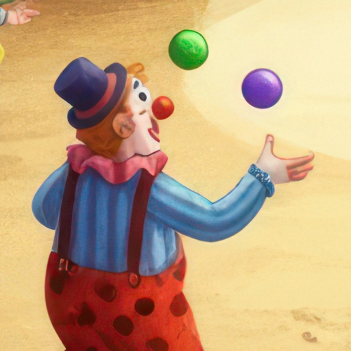

Politique de confidentialité
Flying circus · mise à jour le 9 novembre 2026
Flying circus ne collecte, ne transmet et ne vend aucune donnée personnelle.
- Le jeu n'a ni compte, ni publicité, ni outil de mesure d'audience ou de suivi.
- Il fonctionne sans connexion internet et n'envoie rien sur un serveur.
- Les meilleurs scores et les réglages (son, difficulté) sont enregistrés uniquement sur votre iPhone. Ils sont effacés si vous supprimez l'application.
- Aucune donnée n'est partagée avec des tiers.
Enfants
Le jeu convient à tous les âges et ne recueille aucune information sur les enfants.
Contact
Pour toute question sur cette politique : écrivez-nous ici. Si elle change, la nouvelle version sera publiée sur cette page.
Privacy policy (English)
Flying circus does not collect, transmit or sell any personal data. There are no accounts, ads, analytics or tracking. The game works offline. Your best scores and settings are stored only on your iPhone and are deleted with the app. Nothing is shared with third parties. Questions: contact us here.